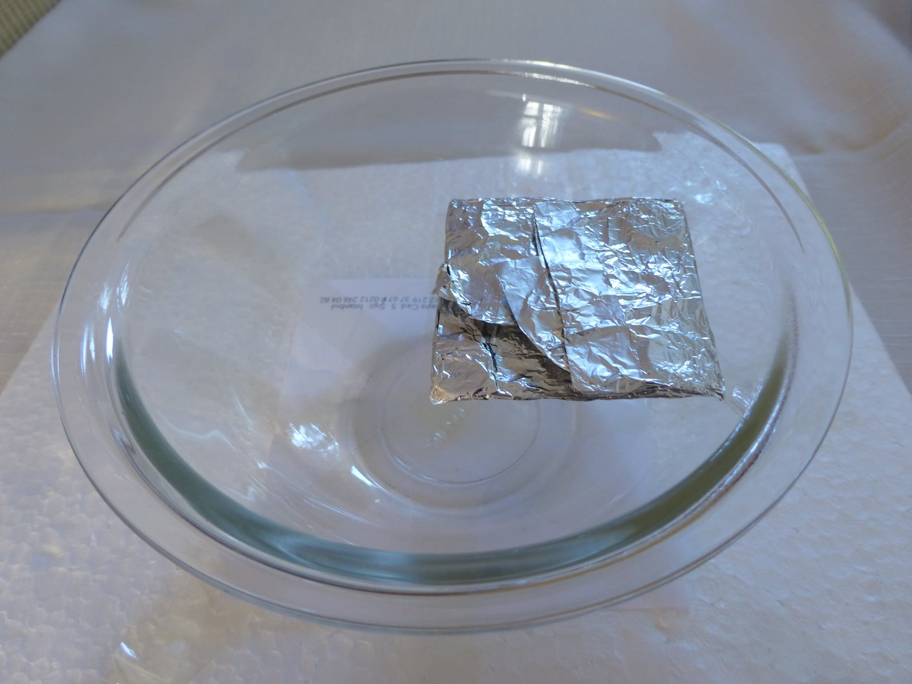

Łańcuch magnesów trwałych NdFeB i SmCo
Najważniejsza dana: 2000 metric tons/rok (obecnie) oraz "$111.9 million Qualifying Advanced Energy Project Tax Credit" pokazują, że budowa niechińskiej produkcji wymaga równocześnie skali przemysłowej i wsparcia publicznego. Dla inwestora oznacza to przewagę projektów, które mają już finansowanie i zakład zdolny do seryjnych dostaw. 2
W skrócie
Magnes NdFeB, czyli neodymowo-żelazowo-borowy, jest podstawą wydajnych silników, natomiast SmCo, czyli samarowo-kobaltowy, pozostaje materiałem niszowym dla obronności i pracy w wysokiej temperaturze. Chiny narzucają warunki tego rynku, ponieważ w 2024 r. odpowiadały za 94% produkcji magnesów trwałych. Odbiorcy szukający dostaw spoza Chin płacą od 10 do 30 USD/kg, czyli dolarów amerykańskich za kilogram, premii albo do 20% więcej za magnes z Wietnamu. Jednocześnie chińskie kontrole objęły 7 ciężkich pierwiastków w kwietniu 2025 r., a przebudowa amerykańskiego łańcucha obronnego może potrwać 15 lat. Dla inwestora wniosek jest prosty: zyskują firmy kontrolujące metal, stop i kwalifikowaną linię poza Chinami, a ryzyko ponoszą klienci zależni od importu. 33435

Rycina 20: Magnesy neodymowe (NdFeB) - najsilniejsze dostępne komercyjnie magnesy trwałe, kluczowe ogniwo łańcucha wartości ziem rzadkich.1
Od tlenku do gotowego magnesu
Droga opisana szerzej w Separacja, rafinacja i metalurgia zaczyna się od redukcji oczyszczonego tlenku ziem rzadkich do metalu, który następnie stapia się z żelazem i borem. Strip casting, czyli szybkie odlewanie cienkiej taśmy stopu, przygotowuje mikrostrukturę; hydrogen decrepitation, czyli kruszenie wodorem, rozsadza stop, a jet milling, czyli mielenie strumieniem gazu, tworzy drobny proszek. Ziarna ustawia się w polu, prasuje i spieka, czyli zagęszcza cieplnie bez pełnego topienia, albo łączy polimerem w magnes wiązany. Spiekane NdFeB miały 82,3% rynku tego materiału w 2025 r., dlatego opanowanie procesu proszkowego i spiekania jest ważniejszą przewagą niż sam dostęp do surowca. 67
Po spiekaniu półfabrykat jest cięty, szlifowany, magnesowany i chroniony przed korozją, na przykład powłoką Ni-Cu-Ni, czyli nikiel-miedź-nikiel, o grubości około 12 mikrometrów, gdzie mikrometr to milionowa część metra. Znaczenie każdego etapu potwierdza rosnąca koncentracja: chiński udział wynosi 60% w wydobyciu, 91% w rafinacji i 94% w gotowych magnesach. Dla inwestora oznacza to, że marża i ryzyko mogą skupiać się w technologii przetwarzania oraz wykończenia, a nie wyłącznie w kopalni. 83
Dy, Tb i odporność na temperaturę
Dy, czyli dysproz, i Tb, czyli terb, zwiększają koercję - odporność na rozmagnesowanie - potrzebną w wysokiej temperaturze, lecz są drogie. GBD, grain boundary diffusion, czyli dyfuzja po granicach ziaren, ogranicza ich zużycie przez umieszczanie ich głównie przy powierzchniach ziaren zamiast w całej objętości, co łączy ten proces z Substytucja i ograniczanie zużycia. GBD z Tb podniosło koercję Hcj o 4,95%, z Tb-Ga, czyli terbem i galem, o 53,15%, a DyF3, czyli fluorek dysprozu, o 50%; inny dyfuzant zwiększył ją z 18,47 do 23,60 kOe, czyli kiloerstedów, jednostki natężenia pola, przy obróbce rozpoczynanej w 900°C, gdzie °C oznacza stopnie Celsjusza. Presję technologiczną wzmacnia cena: w 2025 r. tlenek dysprozu w Ameryce Północnej kosztował 4,4 raza tyle co u producenta w Chinach, a prognoza na 2027 r. wynosi 8,3 raza. Dla inwestora techniki oszczędzające ciężkie pierwiastki są więc jednocześnie źródłem przewagi kosztowej i zabezpieczeniem dostaw. 991011
Producenci chińscy i japońscy
Skalę chińskiej konkurencji pokazuje JL MAG, który na koniec 2024 r. miał moc 38 000 ton metrycznych półfabrykatów rocznie, produkował 29 300 ton półfabrykatów i 21 600 ton wyrobów gotowych. Zhong Ke San Huan deklarował 20 000 ton spiekanych NdFeB rocznie, w tym bazę Ganzhou o zdolności 5 000 ton półfabrykatów i 3 200 ton gotowych magnesów, natomiast Ningbo Yunsheng celował w 15 000 ton mocy w Baotou do końca 2024 r. Earth-Panda wykazał 1,6 miliarda CNY, czyli juanów, przychodu w 2025 r., lecz jego wolumen pozostaje NIE UJAWNIONE. Dla inwestora jest to sygnał, że nowy producent spoza Chin konkuruje nie z pojedynczą fabryką, lecz z dojrzałym ekosystemem zakładów o dużej skali. 12131415
Japońscy producenci odpowiadają technologią i ekspansją zagraniczną. Shin-Etsu podwoił moc w Wietnamie z 1 100 do 2 200 ton rocznie, a Proterial, dawniej Hitachi Metals, raportował ponad 600 patentów; wolumen TDK pozostaje NIE UJAWNIONE w dopuszczonych danych. Daido planował z kolei amerykański zakład za 10 miliardów jenów, około 100 milionów USD, z uruchomieniem w 2019 r. Dla inwestora japońska grupa stanowi jakościową alternatywę wobec Chin, ale brak pełnych danych o wolumenach utrudnia ocenę jej realnej siły podażowej. 16171819
Zachodnia odbudowa mocy
Zachodnia odbudowa mocy, będąca częścią szerszej Dywersyfikacja i budowa łańcucha poza Chinami, zaczyna nabierać przemysłowego kształtu. VAC i e-VAC w Sumter produkują 2 000 ton NdFeB rocznie i wskazują drogę do 12 000 ton, a projekt otrzymał ulgę 111,9 miliona USD. MP Materials ma 1 000 ton w Fort Worth i cel około 10 000 ton w 2028 r.; umowa odbioru, czyli offtake, z General Motors przewidywała narastanie dostaw od 2023 r. Dla inwestora liczy się tu nie tylko zapowiedziana moc, lecz także finansowanie, odbiorca i tempo dochodzenia do jakości seryjnej. 20221622
Druga fala projektów jest bardziej zróżnicowana. USA Rare Earth w Stillwater zakładał 600 ton na koniec 2025 r., 1 200 ton w pierwszym kwartale 2027 r. i 4 800 ton mocy znamionowej, czyli projektowego maksimum. Noveon podaje 2 000 ton rocznej zdolności recyklingowej i finansowanie 215 milionów USD, Neo w Narwie ma 2 000 ton z opcją 5 000 ton, a Arnold zainwestował ponad 50 milionów USD w ciągu 5 lat. Dla inwestora ta grupa oferuje ekspozycję na różne modele wzrostu, lecz rozbieżność między mocą bieżącą a docelową pozostaje głównym ryzykiem wykonawczym. 232425252627
Patenty po wygaśnięciu kluczowych praw
W 2015 r. Hitachi Metals mówił o ponad 600 patentach dla spiekanych NdFeB i 12 licencjobiorcach, w tym 8 chińskich. Kluczowy amerykański patent kobaltowy wygasł w 2014 r., a w 2021 r. sąd w Ningbo zasądził 4,9 miliona RMB, czyli juanów chińskich, za antymonopolowe naruszenie przy odmowie licencji. Bariera przesunęła się więc w stronę patentów procesowych, tajemnicy produkcji i kwalifikacji, których koszt pozostaje NIE UJAWNIONE. Dla inwestora wartość własności intelektualnej nadal ma znaczenie, ale coraz silniej zależy od zdolności przełożenia jej na stabilny proces i akceptację klienta. 172829
SmCo, F-35 i luka samarowa
SmCo pracuje w temperaturze do 350°C, dlatego pozostaje trudny do zastąpienia w najbardziej wymagających zastosowaniach. Remanencja to magnetyzm pozostający po usunięciu pola, koercja to odporność na rozmagnesowanie, a BHmax to maksymalny iloczyn energetyczny, czyli gęstość energii pola. Klasa SmCo5 IP ma 10,1 kG remanencji, gdzie kG oznacza kilogaus, minimum 12,5 kOe koercji i 25,0 MGOe BHmax, gdzie MGOe to milion gausów-oerstedów; Sm2Co17 IP ma odpowiednio 11,0 kG, 20,0 kOe i 28,0 MGOe. Dla inwestora niewielka skala tego rynku nie usuwa jego atrakcyjności, ponieważ krytyczność zastosowań może wzmacniać siłę cenową kwalifikowanych dostawców. 3030
W 2022 r. Pentagon wstrzymał dostawy F-35 po wykryciu chińskiego stopu SmCo w podsystemie Honeywell; materiał znalazł się w 850 dostarczonych maszynach. Odstępstwo objęło 126 kolejnych samolotów, choć flota miała ponad 500 000 godzin lotu bez awarii przypisanej tym magnesom. DFARS, czyli przepisy zakupowe Departamentu Obrony, od 1 stycznia 2027 r. obejmują zakazem SmCo i NdFeB z 4 krajów restrykcyjnych. Dla inwestora przypadek ten pokazuje, że zgodność pochodzenia może zatrzymać dostawy nawet wtedy, gdy produkt nie zawodzi technicznie. 313233
Najpoważniejszą luką pozostaje sam metal, co bezpośrednio łączy ten temat z Geopolityka i koncentracja łańcucha dostaw. Chiny kontrolują 100% światowej podaży samaru, podczas gdy zapas przemysłu obronnego USA wystarcza na 2-3 lata. LCM oferuje metal Sm o czystości 99,9%, lecz tonaż pozostaje NIE UJAWNIONE; REalloys dopiero celuje w 300 ton rocznie łącznie Sm i Gd, czyli samaru i gadolinu, a Arnold deklarował zgodność z DFARS na połowę 2026 r. Zachodni producent metalicznego Sm o ujawnionej seryjnej mocy nadal nie został wykazany, więc dla inwestora ograniczenie surowcowe może być większym ryzykiem niż sama zdolność wytwarzania magnesów. 534353637
xychart-beta title "Udział Chin w magnesach spiekanych (proc.)" x-axis ["2005", "2024"] y-axis "Procent" bar [50, 94]
Rycina 3: Udział Chin w produkcji spiekanych magnesów NdFeB, 2005 vs 2024.
Kontrowersje
Czy patenty nadal są barierą. Za tą tezą przemawia ponad 600 patentów i 12 licencjobiorców w 2015 r. Przeciw niej przemawiają wygaśnięcie kluczowego patentu w 2014 r. oraz wyrok z 2021 r. i 4,9 miliona RMB odszkodowania. Patenty są więc barierą selektywną, a nie pełną blokadą; inwestor powinien oceniać je razem z know-how procesu i kwalifikacją produktu. 172829
Deklarowane i realne moce Zachodu. Optymista widzi VAC na 2 000 ton z drogą do 12 000 ton oraz MP na 1 000 ton z celem 10 000 ton w 2028 r. Sceptyk wskazuje, że Stillwater miał osiągnąć tylko 600 ton na koniec 2025 r. wobec 4 800 ton docelowo, a rzeczywisty sprzedany wolumen projektów pozostaje NIE UJAWNIONE. Dla inwestora wartością jest zatem uruchomiona i zakwalifikowana produkcja, a nie sama zapowiedź mocy. 2062324
Premia ex-Chiny. Dla magnesów podawany jest przedział od 10 do 30 USD/kg oraz od 15% do 20% dla Wietnamu. Wyższy punkt to niemal 30% dla tlenku NdPr, przy 80 wobec 62 USD/kg, natomiast pułap 50% nie jest premią magnesu, lecz deklarowaną redukcją kosztu procesu REalloys. Zestawienie 20% z 50% miesza różne miary, więc inwestor powinien oddzielać premię za pochodzenie od oszczędności technologicznej. 4438
Sprzedaż Magnequench. Teza o strategicznym błędzie łączy sprzedaż przez GM w 1995 r. za około 70 milionów USD chińsko-amerykańskiemu konsorcjum z dojściem Chin do blisko 80% produkcji NdFeB w połowie lat 2000. Kontrargument wskazuje, że udział Chin wzrósł szerzej z około 50% w 2005 r. do 94% w 2024 r., więc sama chronologia nie dowodzi, że jedna transakcja spowodowała dominację. Dla inwestora ważniejszy od uproszczonej opowieści o pojedynczej decyzji jest długotrwały efekt przenoszenia kompetencji i skali całego ekosystemu. 39403
Licencje z 2025 r. a magnes jako towar. Za normalizacją przemawia wydanie 2 grudnia 2025 r. pierwszych licencji dla 3 firm: JL MAG, Ningbo Yunsheng i Zhong Ke San Huan. Przeciw niej przemawiają kontrola 7 pierwiastków od 4 kwietnia 2025 r., powiązanie zgód z konkretnymi klientami i próg 0,1% wartości dla części towarów wytworzonych poza Chinami. Licencja przywraca przepływ, ale nie swobodny handel, dlatego inwestor nadal powinien traktować zgodę administracyjną jako ryzyko ciągłości dostaw. 414243
Spółki powiązane
- JL MAG Rare-Earth (300748, SZSE) - profil deep
- MP Materials (MP, NYSE) - profil deep
- Neo Performance Materials (NEO, TSX) - profil deep
- USA Rare Earth (USAR, NASDAQ) - profil deep
- Ningbo Yunsheng (600366, SSE) - profil lite
- Shin-Etsu Chemical (4063, TSE) - profil lite
- TDK (6762, TSE) - profil lite
- Zhong Ke San Huan (000970, SZSE) - profil lite
Źródła
- ilustracja - https://commons.wikimedia.org/wiki/File:Neodymium_magnet_1140509.jpg
- VAC - https://evac-magnetics.com/shared/eVAC-news-first-magnets
- IEA - zastosowania - https://www.iea.org/reports/rare-earth-elements/executive-summary
- Mining.com - premia - https://www.mining.com/web/rare-earth-magnet-users-jolted-into-paying-premium-prices-for-ex-china-supply/
- Mining.com - łańcuch obronny - https://www.mining.com/us-china-deal-and-more-dod-money-will-not-loosen-chinas-grip-on-military-grade-rare-earths-magnets/
- MP Materials - https://mpmaterials.com/news/mp-materials-begins-construction-on-texas-rare-earth-magnetics-factory-to-restore-full-u-s-supply-chain/
- Precedence Research - https://www.precedenceresearch.com/ndfeb-permanent-magnets-market
- Supermagnete - https://www.supermagnete.de/eng/faq/Which-magnet-coatings-are-there
- NIH - metoda GBD - https://pmc.ncbi.nlm.nih.gov/articles/PMC11820678/
- NCBI - https://www.ncbi.nlm.nih.gov/pmc/articles/PMC11642011/
- Benchmark Mineral Intelligence - https://source.benchmarkminerals.com/article/ex-china-rare-earths-premium-to-grow-especially-for-heavies
- SMM - JL MAG - https://news.metal.com/newscontent/103258209-jl-mag-rare-earth-humanoid-robot-magnetic-components-have-initial-mass-production-capability-high-performance-magnetic-m
- SMM - Zhong Ke San Huan - https://news.metal.com/newscontent/101192425-zhongke-sanhuan-a-high-performance-rare-earth-permanent-magnet-product-plans-to-raise-no-more-than-720-million-yuan-thro
- Rare Earth Mining - https://rare-earth-mining.com/top-10-neodymium-magnet-manufacturers/
- Simply Wall St - https://simplywall.st/stock/shse/688077
- Shin-Etsu - https://www.shinetsu.co.jp/en/news/news-release/shin-etsu-chemical-to-double-its-production-capacity-of-rare-earth-magnets-in-vietnam/
- Proterial - https://www.proterial.com/e/press/backnumber/2015/n1118.html
- Nikkei Asia - https://asia.nikkei.com/business/daido-steel-to-make-neodymium-magnets-in-us
- Green Car Congress - https://www.greencarcongress.com/2016/08/20160826-daido.html
- Magnetics Magazine - https://magneticsmag.com/now-investor-owned-vac-to-build-big-magnet-factory-in-south-carolina/
- Community Impact - https://communityimpact.com/dallas-fort-worth/keller-roanoke-northeast-fort-worth/development/2026/02/26/northlake-to-be-home-of-mp-materials-125-billion-manufacturing-campus-10x/
- MP Materials - offtake - https://mpmaterials.com/news/general-motors-and-mp-materials-enter-long-term-supply-agreement-to-scale-rare-earth-magnet-sourcing-and-production-in-the-us/
- Northern Miner - https://www.northernminer.com/news/usa-rare-earth-says-new-oklahoma-magnet-production-line-commissioned/1003889402/
- Yahoo Finance - https://finance.yahoo.com/news/usa-rare-earths-stillwater-facility-150700612.html
- PR Newswire - moce - https://www.prnewswire.com/news-releases/noveon-magnetics-completes-215-million-series-c-to-expand-us-rare-earth-magnet-manufacturing-capacity-302664196.html
- Neo Performance Materials - https://www.neomaterials.com/estonia/
- Arnold - https://www.arnoldmagnetics.com/blog/arnold-magnetic-technologies-leads-industry-with-strategic-investments-and-agreements-to-ensure-continuity-of-critical-rare-earth-materials-supply/
- Mainrich - https://mainrichmagnets.com/chinas-2025-rare-earth-export-controls
- Lexology - https://www.lexology.com/library/detail.aspx?g=000867b1-6ba6-4824-97a0-7d376dcd9dcb
- Stanford Magnets - temperatura - https://www.stanfordmagnets.com/two-grades-of-samarium-cobalt-magnets-smco5-sm2co17.html
- Air Force Times - https://www.airforcetimes.com/pentagon/2022/10/07/dod-inks-waiver-for-deliveries-of-f-35s-halted-over-chinese-material/
- Breaking Defense - https://breakingdefense.com/2022/10/pentagon-approves-waiver-to-restart-f-35-deliveries/
- Cornell LII - https://www.law.cornell.edu/cfr/text/48/252.225-7052
- National Defense - https://www.nationaldefensemagazine.org/articles/2026/7/1/stockpiles-of-critical-mineral-needed-for-highend-magnets-begin-to-dwindle
- Less Common Metals - https://lesscommonmetals.com/raw-materials/samarium/
- Metalnomist - https://www.metalnomist.com/2026/05/realloys-dla-contract-targets-us.html
- Arnold - https://www.arnoldmagnetics.com/blog/arnold-magnetic-technologies-prepares-for-dfars-compliance-updates/
- REalloys - https://realloys.com/realloys-press-release/u-s-defense-logistics-agency-awards-historic-contract-to-realloys-terves-llc-to-scale-domestic-rare-earth-metal-production/
- Rare Earth Exchanges - https://rareearthexchanges.com/news/the-magnequench-betrayal-how-america-lost-control-of-its-military-magnet-supply/
- MacroPolo - https://archivemacropolo.org/analysis/permanent-magnets-case-study-industry-chinese-production-supply/
- Yahoo Finance - https://finance.yahoo.com/news/china-issues-first-batch-general-130729920.html
- Holland & Knight - https://www.hklaw.com/en/insights/publications/2025/04/china-imposes-export-controls-on-medium-and-heavy-rare-earth-materials
- CSET - https://cset.georgetown.edu/publication/mofcom-notice-2025-61/
- 111.9 mln USD - https://vacuumschmelze.com/Newsroom/e-vac-magnetics-receives-historic-1119-million-qualifying-advanced-energy-project-tax-credit-for-construction-of-first-us-manufacturing-facility-in-south-carolina-n2641